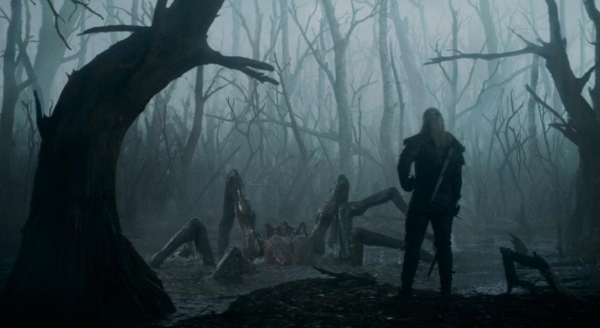

Вышел самый ожидаемый сериал Netflix 2019 года — «Ведьмак» Фанатам он понравится сразу, а тем, кто ничего о нем не знает — ближе к концу сезона.
На Netflix вышел «Ведьмак» — фэнтези-сериал по вселенной Анджея Сапковского, который называют главным конкурентом «Игры престолов» с HBO. За первые сутки с момента выхода он уже успел расстроить критиков и обрадовать фанатов — создателям шоу удалось сохранить и юмор, и мифологию, и даже атмосферу компьютерных игр. Кинокритик Егор Москвитин рассказывает, получится ли у этой экранизации стать заменой истории Джорджа Мартина.
В заставке восьмой серии самого масштабного сериала Netflix 2019 года, кажется, скрыт тайный смысл. В ней появляются металлические фигуры, напоминающие дракона, льва, оленя и (очень отдаленно) кракена; они раскалываются на части и соединяются, чтобы образовать волчью пасть — эмблему Геральта из Ривии, отверженного людьми мутанта с седыми волосами, обладающего магическими способностями и привыкшего убивать за деньги. Его ремесло — охота на монстров. Таких как он называют ведьмаками. Львы, драконы и кракены — монстры из «Игры престолов», которых пришел обезглавить новый герой.
Так мы считали последние два года, наблюдая за гонкой вооружений между стриминговым сервисом Netflix и кабельным каналом HBO. «Игра престолов» уже завершилась, на смену ей на том же канале вышли «Темные начала» — другая фэнтези-сага о вымышленном мире, в котором, как в мутном зеркале, отражаются все страхи мира настоящего. Даже дата премьеры «Ведьмака» — пятница перед длинными рождественскими выходными — кажется ударом по HBO: там в эти дни должны показать одну из кульминационных серий «Темных начал». Впрочем, масштаб современных телевизионных блокбастеров таков, что уже и не знаешь, с кем именно воюет «Ведьмак». Может быть, с «Темными началами», а может быть, и с вышедшими в кинопрокат «Звездными войнами». И то, и другое, и третье — семейные саги и романы воспитания. Два самых главных жанра — и для Голливуда, и для телевидения, и для литературы.
Для просмотра сериалаперейдите по ссылке Приятного просмотра!!!